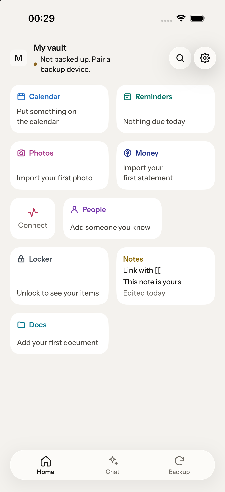

Calendar
See events and reminders due that day.
Apps · nine places to work
Open any app from Home. Each works with records in the same vault.

Choose an app
See events and reminders due that day.
Keep tasks in lists and projects; mark them done in Reminders.
Keep contacts, relationships, and linked records.
Write in notebooks and link notes to records.
Keep files and editable text documents with version history.
Import photos from your phone library.
Import statement lines and see totals.
Read supported data or log figures and workouts.
Keep logins and sensitive items behind an owner check.
All nine use the same phone vault. There is no app catalogue or install step.